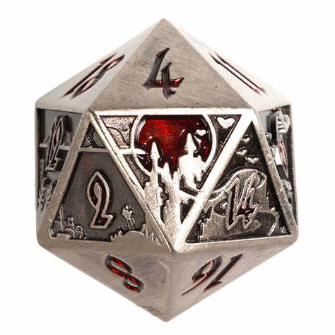

Dados metalicos por DIE HARD DICE
Sanguine Call por Die
Se manifiesta un castillo tenebroso. El vampiro amenaza. ¿Responderás a la llamada?
Cuando tu campaña se ocupa de cementerios, vampiros, hombres lobo, oscuridad y lunas de sangre, este fuerte d20 se sumará a la sensación de peligro sombrío.
Caracteristicas
- Las 10 caras centrales son una escena de cementerio exquisitamente panelada.
- La cara 20 muestra una enorme luna de sangre detrás del castillo del vampiro.
- Los números están incrustados en rojo translúcido.
- Son un 25% más altos y el doble de pesados que los D20 normales de 20 mm.
- Dados de metal macizo, aleación de zinc no tóxico fundido a presión
